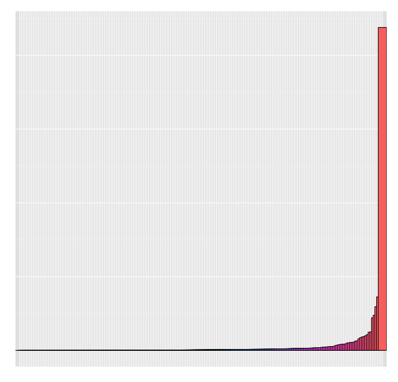
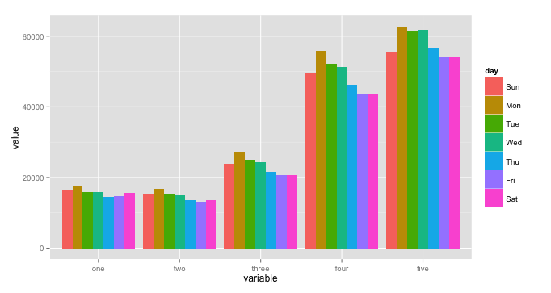
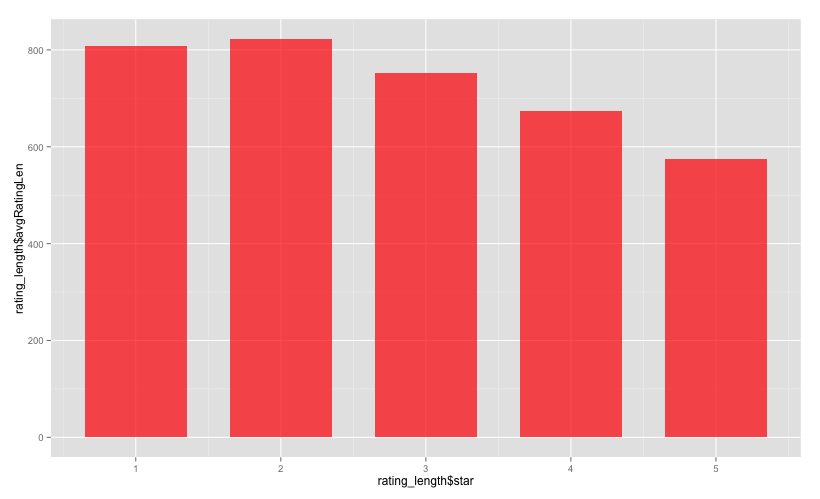

Automated Topic Detection and Social Recommendation using LDA
Vinay Mandal
2015-09-01
Motivation
- Most recommendation don't use review texts
- Real World data
- Graphs
The dataset
Number of Businesses: 61184
Number of Users: 366715
Number of Reviews: 1569264
Business Categories

Ratings by day of week

Average rating text length

Method Overview
- Uncover hidden dimensions of ratings and review text combined
- Use the hidden dimensions from review texts to find user preference
- Build a graph database of user - prefers - latent topic
- Use the graph to recommend new friends
Training
Tokenize Reviews → Remove stop words → POS Tagging → Lemmatize → Train LDA → Label latent topics
Tokenization and removal of stop words
- Process of breaking stream of text into words, symbols, phrases or other meaningful elements called tokens.
- Certain characters like punctuations might be excluded
An example: "Few things are harder to put up with than a good example."
can be tokenized into:
["few", "things", "are", "harder", "to", "put", "up", "with", "than", "a", "good", "example"] - Stop words like are, to, up and a can be ignored as they are not important
POS Tagging
Process of classifying words into their parts of speech based on its definition as well as its context.
[('Few', 'JJ'), ('things', 'NNS'), ('harder', 'JJR'), ('put', 'VB'), ('up', 'RP'), ('than', 'IN'), ('good', 'JJ'), ('example', 'NN')]
Lemmatization
"Process of grouping diffrent inflected forms of word so that they can be analyzed as single word"
wordnet_lemmatizer.lemmatize(‘aardwolves’) # u'aardwolf'
wordnet_lemmatizer.lemmatize(‘is’, pos=’v’) # u'be'
wordnet_lemmatizer.lemmatize(‘are’, pos=’v’) # u'be
Latent Dirichlet Allocation
"...is a generative model that allows sets of observations to be explained by unobserved groups that explain why some parts of the data are similar."
- In LDA, a document is a mixture of a small number of topics and that each word's creation is attributable to one of the document's topics
- LDA is similar to pLSA except in LDA topic distribution is assumed to have Dirichlet prior.
- Using python package "gensim"
Model prediction example
"I love this place and eat here at least once a week. Their pad si yew, pad Thai, dumplings, Siam rolls, and their curries are their best dishes. Especially the curry. You can't go wrong at Thai moon, so I suggest you go and enjoy the food!"
Model prediction:
['scores': u'0.060*thai + 0.036*food + 0.032*curry + 0.028*lunch + 0.027*spicy + 0.023*place + 0.021*tea + 0.019*dish + 0.017*chicken + 0.015*time']
User → Likes → Topic
Why graph db?
- Relationships are first-class citizens of graph database
- High performance online query
- Good for building recommendation engine
User → Likes → Topic
Neo4j with "py2neo". Example:
from py2neo import Node, Relationship, Graph
graph = Graph()
userNode = Node('User', name='name', id=jsonData'user_id')
topicNode = Node('topics', 'key', topicKey)
likes = Relationship(userNode, 'topiclike', topicNode)
graph.create(likes)
User → Likes → Topic

Recommendation Engine
query = ('match (u1 {id:"UZyNf0h26jNVvpHT-GF2oA"})'
' - [rel:topiclike]-> r <- [re:topiclike] - (u2) '
'with count(r) as topiccounts, u2 as user2 '
'where topiccounts > 2 return user2, topiccounts'
' order by topiccounts desc limit 10')
result = graph.cypher.execute(query)
Result
| userid | topiccounts | |
|---|---|---|
| 1 | kGgAARL2UmvCcTRfiscjug | 20 |
| 2 | 4ozupHULqGyO42s3zNUzOQ | 19 |
| 3 | DrWLhrK8WMZf7Jb-Oqc7ww | 16 |
| 4 | 90a6z--_CUrl84aCzZyPsg | 15 |
| 5 | 4G68oLRY3aHE5XUt_MUUcA | 12 |
| 6 | iwUN95LIaEr75TZE_JC6bg | 11 |
| 7 | pEVf8GRshP9HUkSpizc9LA | 10 |
| 8 | Ovpa3S8xD96dLE5eDxcxJg | 10 |
| 9 | WmAyExqSWoiYZ5XEqpk_Uw | 9 |
| 10 | lmiDCrmas8TxRsbIGZX9Pg | 9 |
-
Future Work
- Find trendsetters
- Location aware recommendation
- Predict usefulness of review texts